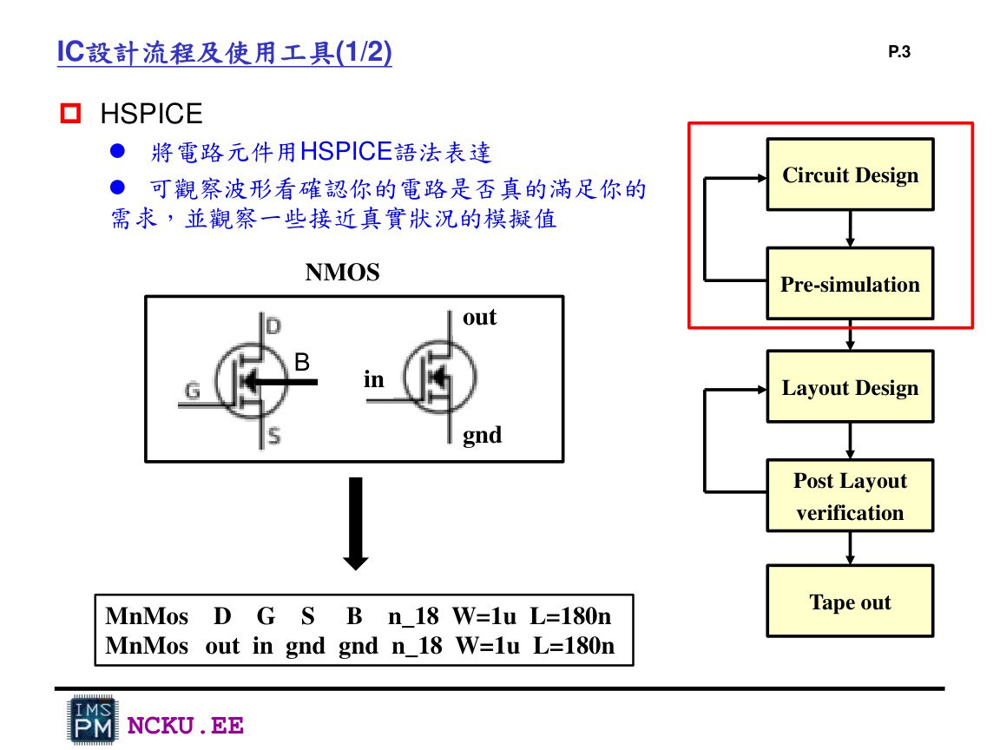
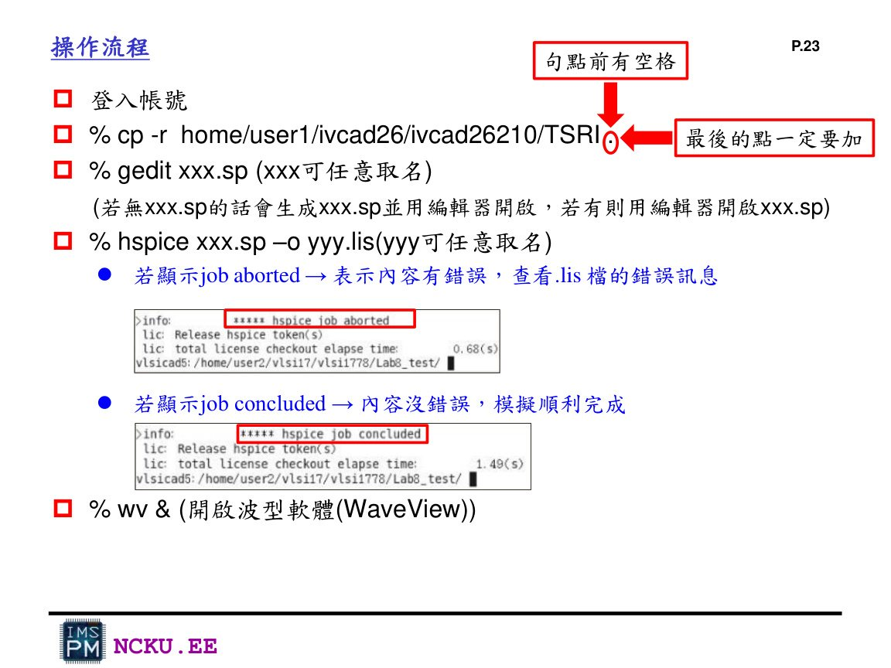
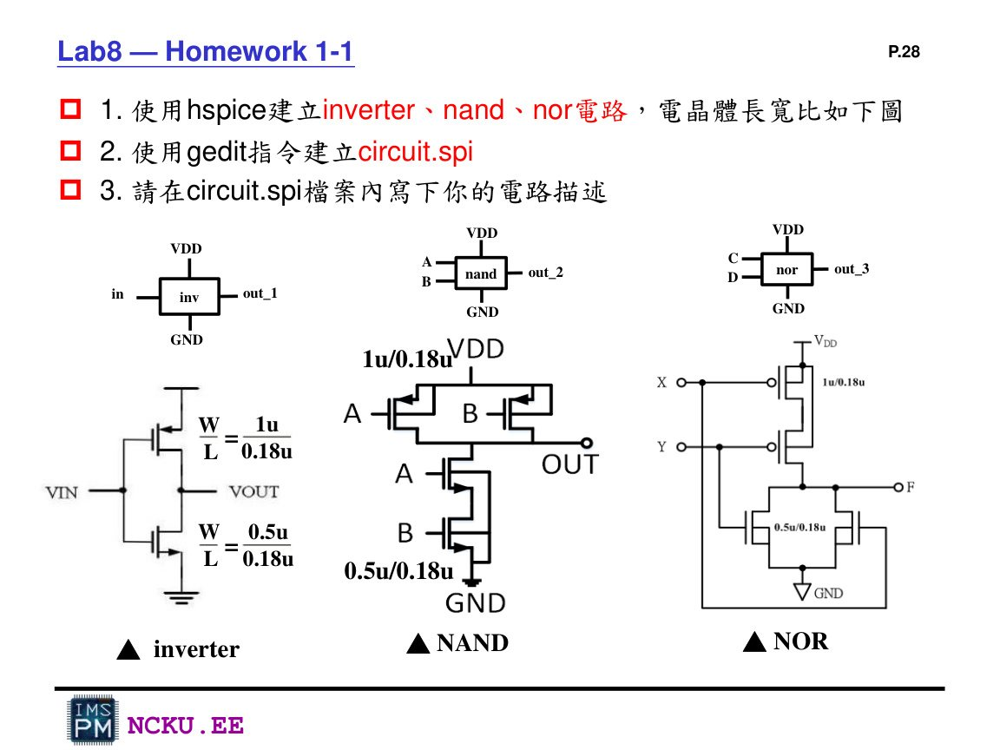
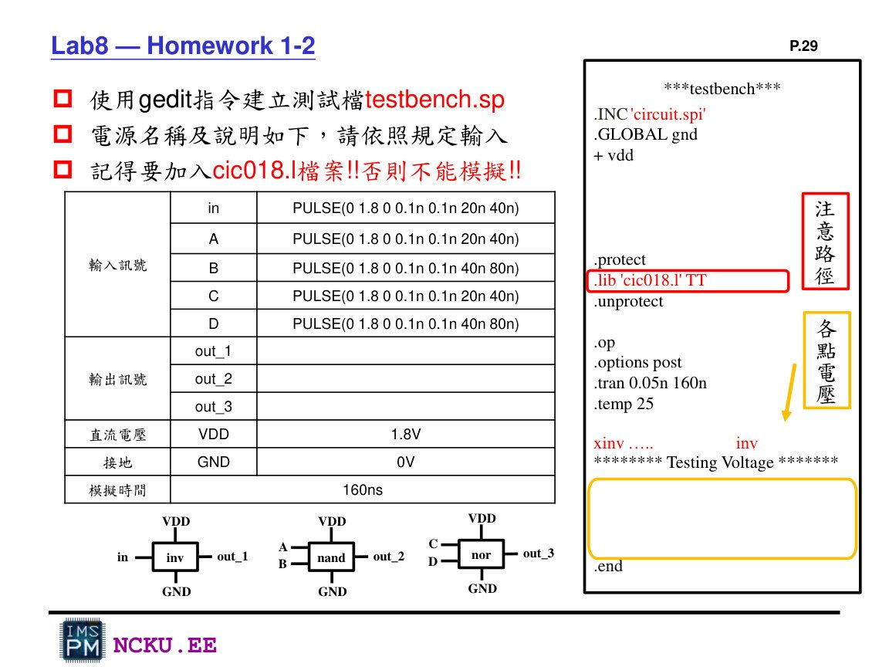

作業八：HSPICE Pre-simulation 完整流程
Lab8 的重點是用 transistor-level netlist 寫出 inverter、NAND、NOR，透過 HSPICE 模擬確認輸入與輸出邏輯波形。
一、Lab8 目的
Lab8 先不畫 layout，而是先把 CMOS 邏輯閘用 HSPICE 語法描述出來。這相當於 IC 設計流程中的 Circuit Design 與 Pre-simulation。完成後要得到每個電路的輸入與輸出波形，確認邏輯功能正確。
二、Lab8 製作流程
登入工作站
→複製 TSRI / cic018
→寫 circuit.spi
→寫 testbench.sp
→跑 HSPICE
→WaveView 看波形
→截圖做報告

HSPICE 會把 MOS 元件語法轉成電路模擬結果，Lab8 主要使用 transient analysis。

Lab8 講義的基本操作流程：cp TSRI、gedit、hspice、wv。
三、要做的三個電路
| 電路 | PMOS | NMOS | 輸入 | 輸出 | 判斷重點 |
|---|---|---|---|---|---|
| Inverter | 1u / 0.18u | 0.5u / 0.18u | in | out_1 | 輸出與輸入相反 |
| NAND | 1u / 0.18u | 0.5u / 0.18u | A, B | out_2 | 只有 A=B=1 時輸出為 0 |
| NOR | 1u / 0.18u | 0.5u / 0.18u | C, D | out_3 | 只有 C=D=0 時輸出為 1 |

Lab8 作業要求：使用 HSPICE 建立 inverter、NAND、NOR，尺寸如圖。
四、Lab8 input / output 設定

Lab8 testbench 規定：VDD=1.8V、GND=0V、輸入 PULSE、模擬 160ns。
輸入訊號
in: PULSE(0 1.8 0 0.1n 0.1n 20n 40n) A : PULSE(0 1.8 0 0.1n 0.1n 20n 40n) B : PULSE(0 1.8 0 0.1n 0.1n 40n 80n) C : PULSE(0 1.8 0 0.1n 0.1n 20n 40n) D : PULSE(0 1.8 0 0.1n 0.1n 40n 80n)
輸出訊號
out_1 out_2 out_3